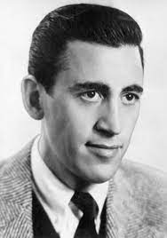

J.D Salinger was an American author who published several respected pieces published by the "The New Yorker". His most famous and influential piece was "The Catcher in The Rye". He was born in 1919 and died in 2010. His work was very controversial and many critics still argue about it to this day. However, many teenagers find themselves relating to his characters making his books some of my favorites.
